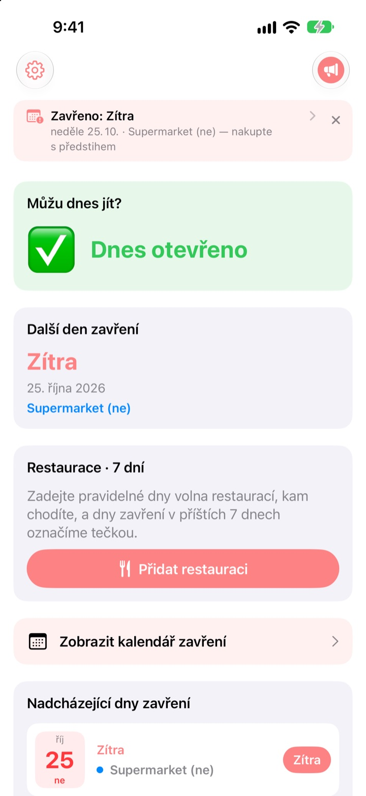
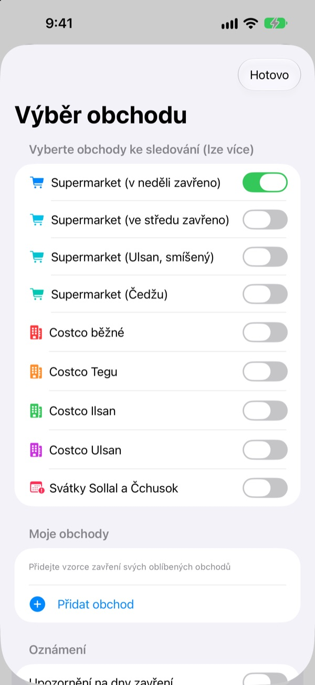
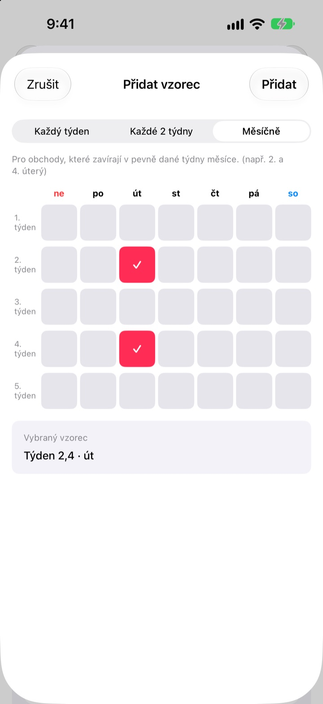
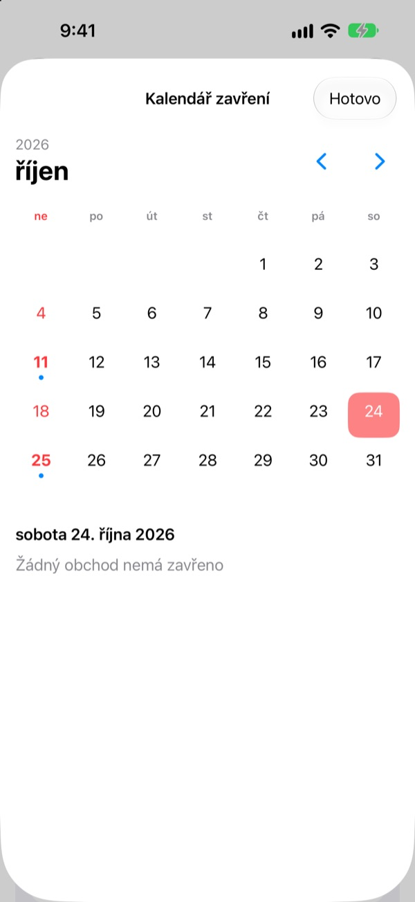
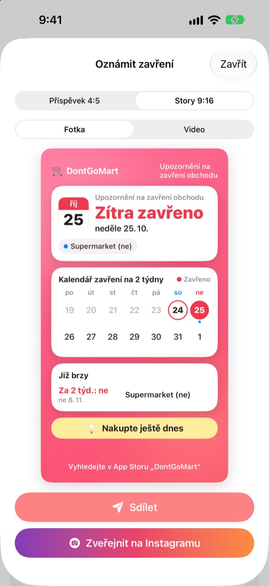

Než vyrazíte nakoupit,
ověřte, že mají otevřeno
Po otevření aplikace hned vidíte, jestli mají vaše obchody dnes otevřeno. Před každým dnem zavření přijde připomínka, takže už nenarazíte na zamčené dveře.
Všechny funkce jsou zdarma. Bez účtu a bez reklam.

Vyzkoušejte to na svém obchodě
Vyberte obchod a hned uvidíte, jestli má dnes otevřeno a kdy příště zavírá. Počítá se podle stejných pravidel jako v aplikaci.
Stalo se vám, že jste dorazili se seznamem a bylo zavřeno?
Hypermarkety v Koreji musí dva dny v měsíci zavřít, ale které to jsou, záleží na místě. Většinou druhá a čtvrtá neděle, jinde středa, a Ulsan s Čedžu mají vlastní pravidla. U Costco rozhoduje pobočka. DontGoMart spočítá dny zavření podle pravidel vašich obchodů a hned vám řekne, jestli můžete jít dnes.
Sedí pro každý region
Vyberte obchody, které zavírají v neděli nebo ve středu, nebo regiony s vlastním rozpisem jako Ulsan a Čedžu. Běžné pobočky Costco a ty v Tegu, Ilsanu a Ulsanu se nastavují zvlášť.
Zobrazí se i zavření přímo o svátcích Sollal a Čchusok a sledovat můžete víc obchodů najednou.

Obchod za rohem i oblíbené restaurace
Chybí-li obchod v seznamu, přidejte si ho sami: každý týden, jednou za dva týdny nebo ve které týdny v měsíci a který den zavírá.
U restaurace vložte odkaz sdílený z Naver Map nebo vyberte snímek obrazovky s její stránkou a pravidelné dny volna se vyplní samy. Text na fotkách se čte jen ve vašem zařízení.

Připomínky a widgety, abyste nezapomněli
Nechte si připomenout 1, 2, 3 nebo 7 dní předem ve zvolený čas a den předtím ještě jednou, že dnes je dobrý den na nákup.
Widgety na ploše a zamčené obrazovce ukazují nejbližší den zavření, jestli je tuto neděli otevřeno a nejbližších sedm dní vašich restaurací. Kalendář ukáže celý měsíc.

Sdílejte jednou kartou
Udělejte ze zprávy kartu s dvoutýdenním kalendářem a tipem na nákup a pošlete ji do rodinného chatu. Formáty pro příspěvek i příběh na Instagramu a krátké video.

Začnete ve třech krocích
- 1
Vyberte obchody
Zapněte obchody a regiony, kde nakupujete. Kolik chcete.
- 2
Zapněte připomínky
Zvolte, kolik dní předem a v kolik hodin.
- 3
Přidejte widget
Kontrolujte na ploše nebo zamčené obrazovce bez otevírání aplikace.
Pravidla zavření podle obchodu
- Supermarket (v neděli zavřeno)
- 2. a 4. neděle · většina regionů
- Supermarket (ve středu zavřeno)
- 2. a 4. středa · část Kjonggi, Čchongdžu
- Supermarket (Ulsan)
- 2. středa, 4. neděle
- Supermarket (Čedžu)
- 2. pátek, 4. sobota
- Costco běžné
- 2. a 4. neděle
- Costco Tegu
- 2. a 4. pondělí · Tegu, Tegu Innovation
- Costco Ilsan
- 2. a 4. středa
- Costco Ulsan
- 2. středa, 4. neděle
- Sollal, Čchusok
- zavřeno přímo ve svátek
Povinné dny zavření určují místní úřady a mohou se změnit. Pokud něco nesedí, napište nám na adresu níže.
Časté dotazy
Dny zavření neodpovídají skutečnosti.
Povinné dny zavření určují místní vyhlášky a liší se podle regionu. Zkontrolujte v Nastavení, že máte vybraný správný typ obchodu (v neděli zavřeno, ve středu zavřeno, Ulsan, Čedžu atd.). Pokud to stále nesedí, pošlete nám název obchodu a oblast a prověříme to.
Můj obchod v seznamu není.
Přidejte si ho jako vlastní obchod. Zvolte každý týden, jednou za dva týdny nebo ve které týdny v měsíci a který den zavírá, například 2. a 4. neděli.
Dny volna restaurace se nevyplnily správně.
Při importu z odkazu Naver Map musí mít restaurace na své stránce uvedené pravidelné volno. U snímku obrazovky dbejte, aby byl text o zavření vidět. Před uložením můžete vše upravit.
Nechodí mi připomínky.
Zkontrolujte, že máte povolená oznámení v Nastavení > Oznámení > DontGoMart a že jsou připomínky zapnuté v aplikaci.
Widget se neaktualizuje.
Stačí jednou otevřít aplikaci a widgety se obnoví. Když to nepomůže, widget odeberte a přidejte znovu.
Co je spropitné?
Všechny funkce DontGoMart jsou zdarma. Spropitné ve formě kávy, dortu nebo jídla je podpora vývojáře. Potom uvidíte poděkování a odznak s počtem spropitných.
Kde se ptát na platby nebo vrácení peněz?
Nákupy v aplikaci vyřizuje Apple, o vrácení peněz tedy žádejte na reportaproblem.apple.com. S ostatním nám napište.
Jak se nakládá s mými daty?
Žádné účty, reklamy ani sledovací nástroje a text na snímcích se čte jen ve vašem zařízení. Podrobnosti najdete v zásadách ochrany osobních údajů níže.
Dotazy nebo nápady posílejte na hyunho.lee.1993@gmail.com. Obvykle odpovídáme do jednoho až dvou dnů.